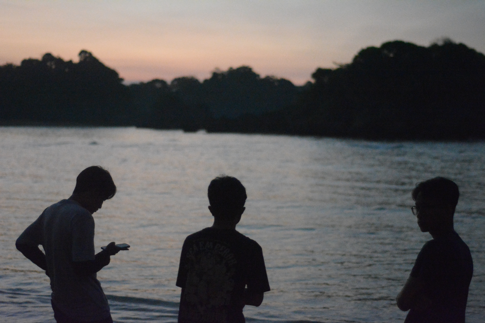
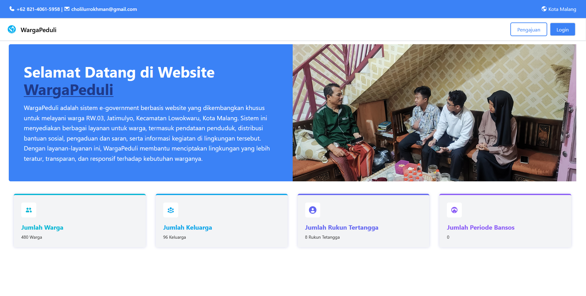
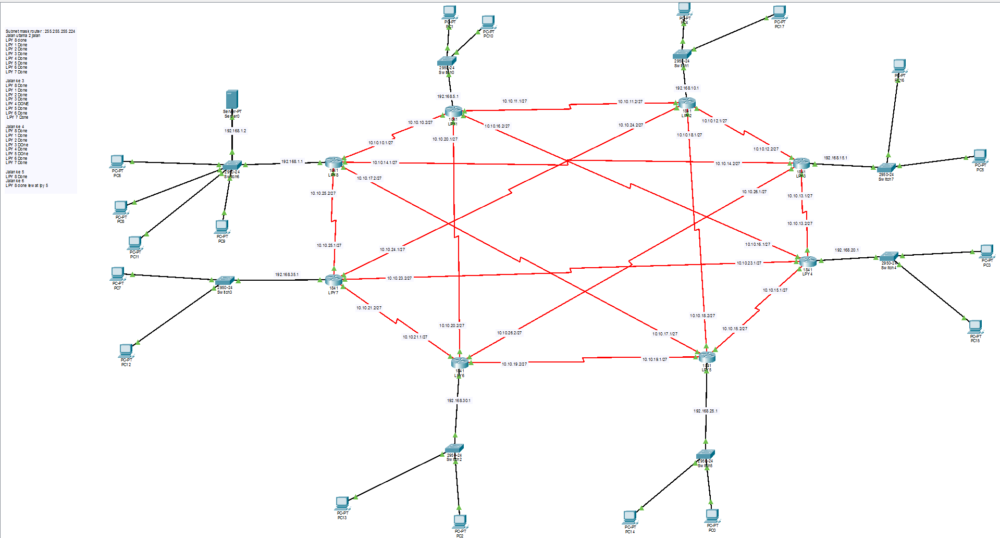
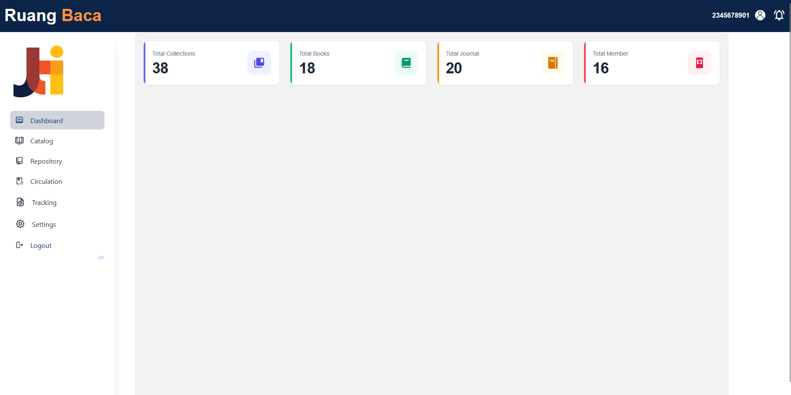
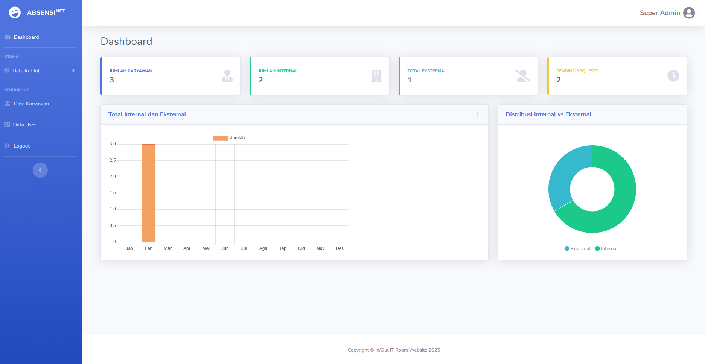
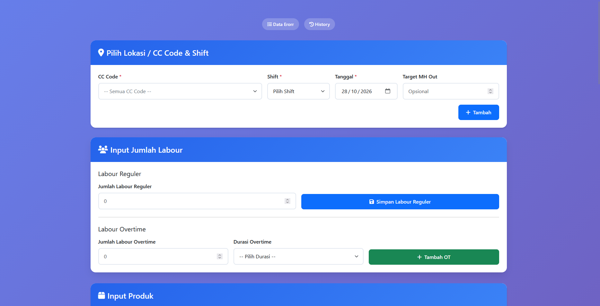
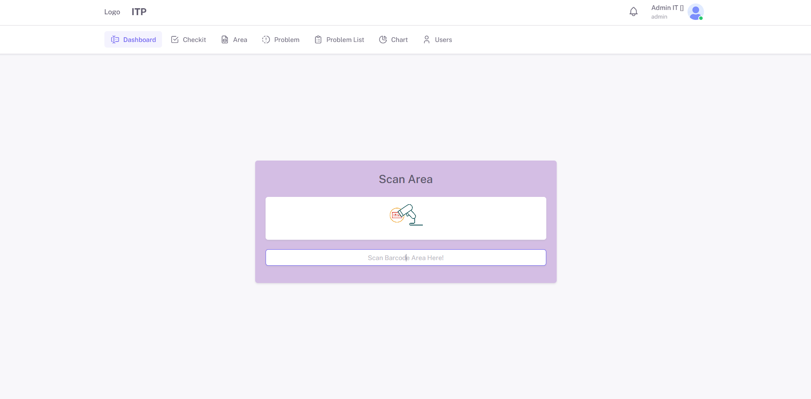
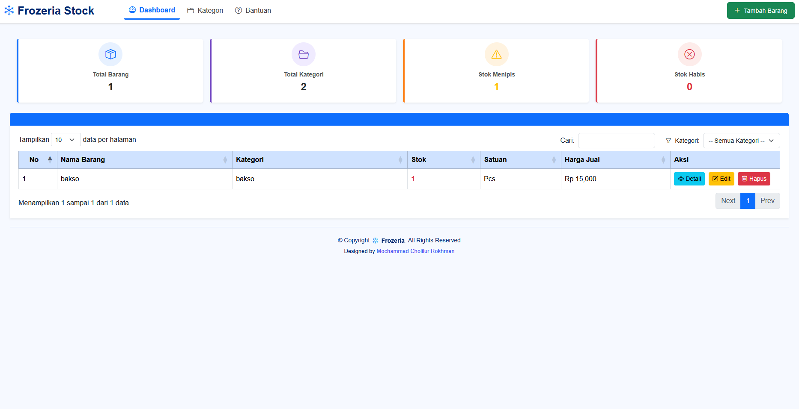
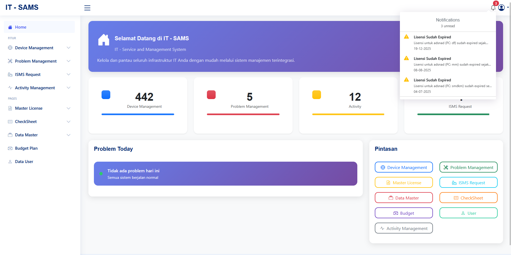

Mochammad Cholilur
Rokhman
I'm Programmer
Tentang Saya
Saya adalah seorang Junior Software Developer yang memiliki pengalaman langsung dalam merancang dan membangun sistem informasi berbasis web untuk manajemen data, monitoring aset, dan perhitungan otomatis. Saya menggunakan berbagai teknologi, seperti PHP, Laravel, Python (Django), dan JavaScript, serta mengelola basis data menggunakan MySQL dan PostgreSQL. Selain pengembangan perangkat lunak, saya memiliki pemahaman dasar mengenai jaringan komputer, termasuk konfigurasi protokol routing OSPF dan RIP. Saya terbiasa bekerja dalam tim, berorientasi pada solusi, dan terus bersemangat untuk mempelajari teknologi baru serta mengembangkan produk digital yang efisien, fungsional, dan mudah digunakan. Berlokasi di Jawa Timur, Indonesia, saya terbuka terhadap peluang karier dan kolaborasi di bidang pengembangan perangkat lunak. Mari bersama-sama menciptakan solusi teknologi yang bermanfaat! 🚀
Web Developer & Full-Stack Developer.
Saya adalah Junior Software Developer yang berpengalaman dalam merancang dan membangun sistem informasi berbasis web untuk manajemen data, monitoring aset, dan perhitungan otomatis. Saya memiliki kemampuan dalam menggunakan PHP, Laravel, Python (Django), dan JavaScript, serta mengelola basis data menggunakan MySQL dan PostgreSQL. Selain itu, saya memiliki pemahaman dasar jaringan komputer, termasuk konfigurasi protokol routing OSPF dan RIP. Saya berkomitmen untuk terus mengembangkan keterampilan dan membangun solusi digital yang efisien, fungsional, dan mudah digunakan.
- Tanggal Lahir: 18 Juli 2003
- Telepon: +62 821 4061 5958
- Lokasi: Jawa Timur, Indonesia
- Usia: 23
- Pendidikan: Sarjana Terapan Teknik Informatika
- IPK: 3.63
- Email: cholilurrokhman03@gmail.com
- Freelance: Available
Saya senang mempelajari teknologi baru, memecahkan masalah, dan bekerja sama dalam tim untuk menghasilkan solusi yang bermanfaat. Saya terbuka terhadap peluang karier dan kolaborasi di bidang pengembangan perangkat lunak, khususnya pengembangan aplikasi berbasis web.
Skill
Memiliki pengalaman dalam pengembangan sistem informasi berbasis web, pengelolaan basis data, serta monitoring aset. Terbiasa menggunakan berbagai bahasa pemrograman dan framework untuk membangun aplikasi yang fungsional. Selain itu, memiliki pemahaman dasar jaringan komputer, troubleshooting perangkat keras, dan pengolahan data.
Profil Singkat
Lulusan Sarjana Terapan Teknik Informatika yang memiliki pengalaman dalam pengembangan sistem informasi berbasis web, monitoring aset, manajemen data, dan perhitungan otomatis. Memiliki kemampuan menggunakan PHP, Laravel, Python (Django), JavaScript, serta basis data MySQL dan PostgreSQL. Memiliki pemahaman dasar jaringan komputer dan troubleshooting perangkat keras. Berorientasi pada solusi, mampu bekerja sama dalam tim, dan berkomitmen untuk terus mengembangkan keterampilan di bidang pengembangan perangkat lunak.
Pengalaman
Full Stack Web Developer Intern
2025 | Januari – Desember
PT Surabaya Autocomp Indonesia (SAI)
Mojokerto, Jawa Timur, Indonesia
- Mengembangkan sistem penghitung kandungan kalori otomatis berdasarkan bahan dan porsi makanan, dilengkapi rekap harian dan bulanan yang dapat diunduh dalam format Excel.
- Mengembangkan sistem informasi manajemen aset dan inventaris Departemen IT dengan fitur ticketing, hak akses berjenjang, notifikasi otomatis, dan ekspor data ke Excel.
- Mengembangkan portal integrasi untuk mengakses berbagai website dan sistem melalui satu halaman, dilengkapi panel admin untuk mengelola daftar situs.
- Mengembangkan sistem pencatatan akses keluar-masuk ruang server IT secara digital, dengan fitur filter riwayat dan ekspor data ke Excel.
- Mengembangkan sistem monitoring penggunaan laptop untuk mengidentifikasi aset yang jarang digunakan, dilengkapi notifikasi otomatis dan rekap data.
- Membangun aplikasi menggunakan Django, Bootstrap, HTML, CSS, dan PostgreSQL.


Pendidikan
Sarjana Terapan Teknik Informatika
2022 – 2026
Politeknik Negeri Malang
- Mempelajari pengembangan perangkat lunak dan sistem informasi berbasis web.
- Mengembangkan aplikasi menggunakan PHP, Laravel, Python (Django), JavaScript, serta basis data MySQL dan PostgreSQL.
- Mempelajari jaringan komputer, pemeliharaan perangkat keras, dan troubleshooting.
- Mengerjakan proyek akademik terkait pengembangan sistem informasi dan pengolahan data.


Teknik Komputer dan Jaringan (TKJ)
2019 – 2022
SMKN 1 Gempol
- Mempelajari instalasi, konfigurasi, dan pemeliharaan jaringan komputer.
- Memahami konfigurasi IP address, routing, switching, serta perangkat jaringan.
- Mempelajari perakitan, pemeliharaan, dan troubleshooting perangkat keras komputer.
- Menggunakan Cisco Packet Tracer untuk simulasi dan praktik konfigurasi jaringan komputer.


Curriculum Vitae
Lihat pengalaman, pendidikan, dan keahlian saya lebih lanjut.
Proyek
Kumpulan proyek yang merepresentasikan pengalaman dan kompetensi saya dalam pengembangan perangkat lunak, perancangan aplikasi berbasis web, serta pengelolaan basis data dengan memanfaatkan berbagai teknologi untuk menghasilkan solusi yang efektif dan fungsional.
Sistem Informasi Manajemen Lingkungan (RW)

Pengembang Front End
Mengembangkan antarmuka sistem informasi manajemen lingkungan tingkat RW untuk mempermudah pengelolaan administrasi warga, informasi bantuan sosial, dan penyampaian kegiatan lingkungan.
- Merancang antarmuka yang ramah pengguna bagi pengurus RW dan warga untuk mempermudah pengajuan serta akses informasi.
- Mengembangkan tampilan untuk mendukung pencatatan data kependudukan, pelacakan bantuan sosial, dan notifikasi kegiatan.
Teknologi: Laravel, MySQL, Tailwind CSS, JavaScript, Redis, Livewire
Simulasi Laboratorium Fakultas

Administrator Jaringan
Merancang dan mengimplementasikan simulasi jaringan laboratorium fakultas menggunakan Cisco Packet Tracer untuk mendukung komunikasi dan pertukaran data antarperangkat jaringan.
- Merancang dan mengimplementasikan topologi jaringan laboratorium fakultas menggunakan Cisco Packet Tracer.
- Mengonfigurasi protokol routing dinamis OSPF dan RIP untuk mendukung pertukaran data antarjaringan secara efisien.
Teknologi: Cisco Packet Tracer, Computer Networking, OSPF, RIP
Sistem Informasi Pepustakaan Fakultas

Pengembang Back End
Mengembangkan sistem manajemen perpustakaan fakultas untuk membantu pengelolaan buku, peminjaman, dan pengembalian buku secara digital.
- Mengembangkan fitur back-end untuk mengelola peminjaman dan pengembalian buku menggunakan PHP dan MySQL.
- Mengimplementasikan sistem autentikasi dan otorisasi bagi mahasiswa dan staf perpustakaan.
- Mengoptimalkan query database untuk mempercepat proses pencarian dan penyaringan buku.
Teknologi: PHP, MySQL, CSS, Bootstrap, JavaScript, HTML
Sistem Pencatatan Akses Ruang Server IT

Full Stack Developer
Mengembangkan sistem pencatatan akses keluar-masuk ruang server IT secara digital untuk mempermudah dokumentasi aktivitas akses serta pengelolaan riwayat akses secara terstruktur.
- Mengembangkan fitur pencatatan akses ruang server IT beserta pengelolaan dan penelusuran riwayat akses.
- Menambahkan fitur filter data berdasarkan kebutuhan pencarian serta ekspor rekap riwayat akses ke format Excel.
Teknologi: Python, Django, PostgreSQL, HTML, Bootstrap, DataTables, dan Chart.js
Sistem Perhitungan Efisiensi Jam Kerja

Full Stack Developer
Mengembangkan web untuk menghitung dan memantau efisiensi jam kerja berdasarkan data aktivitas pekerjaan, sehingga membantu perusahaan dalam mengevaluasi penggunaan waktu kerja.
- Mengembangkan fitur pencatatan dan pengelolaan data aktivitas serta durasi pekerjaan.
- Mengimplementasikan perhitungan efisiensi jam kerja berdasarkan data dan parameter yang digunakan dalam sistem.
- Menyediakan fitur pencarian dan filter untuk mempermudah penelusuran data aktivitas kerja.
Teknologi: Django, Python, PostgreSQL, CSS, HTML, DataTables
Sistem Pelaporan Problem Hardware

Full Stack Developer
Mengembangkan web untuk pencatatan dan pelaporan permasalahan perangkat keras di perusahaan, sehingga data kerusakan dan proses penanganannya dapat dikelola secara lebih terstruktur.
- Mengembangkan fitur pencatatan dan pengelolaan laporan permasalahan perangkat keras.
- Menyediakan fitur pencarian dan filter untuk mempermudah penelusuran data laporan berdasarkan kebutuhan.
- Mengimplementasikan notifikasi untuk membantu pemantauan problem baru.
- Menampilkan statistik laporan problem dalam bentuk grafik untuk mendukung pemantauan dan evaluasi.
Teknologi: Laravel, PHP, Mysql, Tailwindcss, DataTables, dan Chart.js
Sistem Manajemen Inventaris Jual Beli Barang

Full Stack Developer
Mengembangkan aplikasi berbasis web untuk mengelola inventaris barang dan transaksi jual beli, dilengkapi dengan pencatatan stok otomatis, perhitungan transaksi, serta laporan penjualan dan pembelian yang dapat diunduh dalam format Excel.
- Pengelolaan data barang dan transaksi jual beli.
- Pembaruan stok otomatis berdasarkan transaksi.
- Perhitungan total penjualan dan pembelian.
- Rekap transaksi harian dan bulanan dalam format Excel.
Teknologi: Django, Python, Datatables, Jquery, Bootstrap, PostgreSQL
IT Service and Asset Management System (ITSAMS)

Full Stack Developer
Mengembangkan sistem berbasis web untuk mengelola inventaris aset IT dan mendukung operasional divisi IT melalui fitur Request Management, Problem Management, pencatatan barang masuk dan keluar, serta perencanaan anggaran (Budget Plan).
- Mengelola data inventaris aset IT untuk mempermudah pencatatan dan pemantauan aset.
- Mengembangkan fitur Request Management dan Problem Management untuk pencatatan serta pengelolaan permintaan layanan dan permasalahan IT.
- Mengimplementasikan pencatatan barang masuk dan keluar untuk membantu memantau pergerakan inventaris.
- Mengembangkan fitur Budget Plan untuk mendukung perencanaan dan pengelolaan anggaran kebutuhan IT.
- Disetiap fitur dilengkapi Export Import Excel
Teknologi: Django, Python, PostgreSQL, HTML, CSS, Bootstrap, PostgreSQL JavaScript, jQuery, DataTables, Chart.js, dan SweetAlert2
Sistem Penghitung Kandungan Kalori Makanan
Full Stack Developer
Mengembangkan sistem berbasis web untuk menghitung kandungan kalori setiap menu makanan secara otomatis berdasarkan bahan dan porsi yang digunakan, dilengkapi dengan rekap data kalori harian dan bulanan yang dapat diunduh dalam format Excel.
- Mengelola data menu makanan beserta bahan dan takaran yang digunakan.
- Menghitung total kandungan kalori berdasarkan bahan dan porsi makanan.
- Menyimpan dan menampilkan riwayat perhitungan kalori.
- Menyediakan rekap data kalori harian dan bulanan.
- Mengimplementasikan fitur ekspor laporan ke format Excel.
Teknologi: Django, Python, Datatables, Jquery, Bootstrap, PostgreSQL
Sistem Konsultasi dan Pengaduan Klinik
Full Stack Developer
Mengembangkan website klinik untuk mengelola data kunjungan pasien, mencatat keluhan dan konsultasi, serta mengelola data obat. Sistem dilengkapi dengan grafik statistik pengunjung dan fitur ekspor laporan ke format Excel untuk memudahkan pemantauan kunjungan serta rekapitulasi data klinik.
- Mengelola data kunjungan pasien beserta keluhan dan konsultasi.
- Mengelola pencatatan data obat yang tersedia di klinik.
- Menampilkan grafik statistik pengunjung untuk membantu memantau jumlah kunjungan klinik.
- Menyediakan fitur ekspor laporan data ke format Excel.
Teknologi: Laravel, PHP, MySQL, Bootstrap, JavaScript, jQuery, dan SweetAlert2
Sistem Manajemen Dokumen dan Persetujuan
Full Stack Developer
Mengembangkan sistem berbasis web untuk mendistribusikan dokumen ke seluruh perusahaan serta memantau status persetujuan dokumen, masa berlaku, dan status kedaluwarsa. Sistem dilengkapi dengan dan ekspor laporan ke format Excel untuk memudahkan pemantauan serta pengelolaan dokumen perusahaan.
- Mengelola dan mendistribusikan dokumen kepada unit atau bagian terkait di perusahaan.
- Memantau status persetujuan dokumen, termasuk dokumen yang sudah disetujui maupun yang masih menunggu persetujuan.
- Memantau masa berlaku dokumen untuk mengidentifikasi dokumen yang mendekati tanggal kedaluwarsa atau sudah kedaluwarsa.
- Menyediakan pencarian dan filter untuk memudahkan penelusuran dokumen berdasarkan status.
- Menyediakan fitur ekspor data dan laporan dokumen ke format Excel.
Teknologi: Django, Python, Jquery, Bootstrap, PostgreSQL
Dashboard Monitoring Antar Departemen
Full Stack Developer
Mengembangkan website terpusat untuk mengakses dan memantau dashboard Power BI dari berbagai departemen perusahaan. Sistem dilengkapi dengan fitur pengelolaan hak akses oleh admin untuk mengatur akses pengguna terhadap dashboard sesuai dengan kewenangan masing-masing.
- Mengintegrasikan akses ke dashboard Power BI dari berbagai departemen dalam satu website terpusat.
- Mengembangkan fitur pengelolaan hak akses pengguna oleh admin untuk mengatur izin akses terhadap dashboard.
- Mengatur hak akses berdasarkan peran atau kewenangan pengguna sesuai kebutuhan perusahaan.
- Memudahkan pengguna dalam menemukan dan mengakses dashboard departemen sesuai dengan hak akses yang diberikan.
- Menyediakan antarmuka web yang memudahkan pengelolaan akses dan pemantauan dashboard perusahaan.
Teknologi: Django, Python, Jquery, Bootstrap, PostgreSQL
Portal Integrasi Website dan Sistem
Full Stack Developer
Mengembangkan portal berbasis web yang menyediakan akses terpusat ke berbagai website dan sistem perusahaan tanpa perlu memasukkan URL secara manual. Dilengkapi panel admin untuk mengelola daftar situs, sehingga memudahkan penambahan, perubahan, dan pengelolaan tautan website yang tersedia di portal.
- Mengembangkan portal terpusat untuk menyediakan akses cepat ke berbagai website dan sistem perusahaan.
- Menyediakan tautan langsung ke website tujuan tanpa perlu memasukkan URL secara manual.
- Mengembangkan panel admin untuk menambahkan, mengubah, dan menghapus daftar website atau sistem yang tersedia.
- Mengelola informasi situs, seperti nama website, URL, dan deskripsi untuk memudahkan identifikasi sistem tujuan.
- Merancang antarmuka portal yang terstruktur agar pengguna dapat menemukan dan mengakses sistem yang dibutuhkan dengan lebih mudah.
Teknologi: Django, Python, Jquery, Bootstrap, PostgreSQL, Sweetalert2
Daily Summary Kehadiran
Full Stack Developer
Mengembangkan sistem berbasis web untuk memantau dan merekapitulasi kehadiran manpower secara harian. Sistem menyajikan ringkasan data kehadiran untuk memudahkan pemantauan jumlah tenaga kerja yang hadir maupun tidak hadir serta mendukung proses pelaporan kehadiran.
- Menampilkan ringkasan kehadiran manpower berdasarkan data harian.
- Menyediakan informasi jumlah tenaga kerja yang hadir dan tidak hadir sesuai data yang tersedia.
- Memudahkan pemantauan dan penelusuran data kehadiran berdasarkan tanggal.
- Menyajikan data kehadiran dalam bentuk tabel agar mudah dibaca dan dianalisis.
- Membantu proses rekapitulasi dan pelaporan kehadiran manpower secara harian.
Teknologi: Django, Python, Bootstrap, PostgreSQL
Sistem Manajemen Event Lari
Full Stack Developer
Mengembangkan website untuk mendukung pengelolaan event lari, mulai dari penyediaan informasi acara hingga pengelolaan proses pengambilan hadiah peserta. Sistem membantu panitia dalam memantau data peserta dan memastikan proses distribusi hadiah berjalan lebih terorganisir.
- Menyediakan informasi terkait event lari, termasuk detail acara dan informasi yang dibutuhkan peserta.
- Mengelola data peserta yang mengikuti event lari.
- Mendukung proses verifikasi peserta saat pengambilan hadiah.
- Mencatat dan memantau status pengambilan hadiah untuk mengurangi risiko pengambilan ganda.
- Memudahkan panitia dalam memantau data peserta dan rekapitulasi pengambilan hadiah.
Teknologi: Django, Python, Jquery, Bootstrap, PostgreSQL, Sweetalert2
Sistem Informasi Pengumuman Digital
Full Stack Developer
Mengembangkan website untuk menampilkan pengumuman dalam bentuk gambar secara digital, sehingga informasi dapat diakses dengan mudah oleh pengguna. Sistem memudahkan admin dalam mengelola dan memperbarui konten pengumuman yang ditampilkan pada website.
- Menampilkan pengumuman dalam bentuk gambar melalui halaman website.
- Menyediakan panel admin untuk mengunggah dan mengelola gambar pengumuman.
- Memudahkan admin dalam menambahkan, memperbarui, dan menghapus pengumuman yang sudah tidak diperlukan.
- Menyajikan informasi pengumuman dalam tampilan yang terstruktur agar mudah dilihat oleh pengguna.
Teknologi: Django, Python, Jquery, Bootstrap, PostgreSQL, Sweetalert2, Datatable
Sistem Manajemen Distribusi Hadiah dan Seragam
Full Stack Developer
Mengembangkan website untuk mengelola proses pengambilan hadiah ulang tahun dan distribusi seragam bagi karyawan. Sistem membantu admin dalam mengelola data penerima, memverifikasi pengambilan, serta memantau status distribusi agar proses penyaluran lebih terorganisir.
- Mengelola data karyawan yang berhak menerima hadiah ulang tahun dan seragam.
- Mendukung verifikasi penerima saat proses pengambilan hadiah ulang tahun dan seragam.
- Mencatat status pengambilan untuk memantau penerima yang sudah maupun belum mengambil hadiah atau seragam.
- Memudahkan admin dalam memantau dan mengelola data distribusi.
- Menyediakan rekapitulasi data pengambilan untuk membantu proses pelaporan distribusi.
Teknologi: Django, Python, Jquery, Bootstrap, PostgreSQL, Sweetalert2, Datatable
Sistem Monitoring Penggunaan Laptop dan Status Server
Full Stack Developer
Mengembangkan sistem berbasis web untuk memantau penggunaan laptop dan status ketersediaan server secara berkala. Sistem membantu mengidentifikasi aset laptop yang jarang digunakan serta mendeteksi server yang mengalami gangguan melalui pemantauan status konektivitas. Dilengkapi dengan notifikasi otomatis dan rekapitulasi data yang dapat diunduh untuk mendukung pengelolaan aset dan infrastruktur IT.
- Memantau penggunaan laptop untuk mengidentifikasi aset yang jarang digunakan.
- Memantau status konektivitas server untuk mengetahui server yang aktif maupun mengalami gangguan.
- Menyediakan notifikasi otomatis ketika ditemukan kondisi tertentu, seperti server tidak dapat dijangkau.
- Menampilkan rekapitulasi data penggunaan laptop dan status server untuk memudahkan pemantauan oleh tim IT.
- Menyediakan fitur unduh laporan monitoring untuk kebutuhan dokumentasi dan evaluasi.
Teknologi: Django, Python, Jquery, Bootstrap, PostgreSQL, Sweetalert2, Datatable, Celery, Redis
Aplikasi Mobile Deteksi Kerutan Wajah Berbasis Machine Learning
Full Stack Developer
Mengembangkan model machine learning untuk mendeteksi dan mengklasifikasikan kerutan wajah berdasarkan citra yang diambil melalui kamera aplikasi mobile. Proyek ini menerapkan teknik pengolahan citra untuk mempersiapkan gambar, mengekstraksi fitur wajah, dan mengidentifikasi area kerutan. Model dilatih dan diuji menggunakan dataset citra wajah serta diintegrasikan ke dalam aplikasi mobile agar hasil deteksi dapat ditampilkan secara real-time.
- Mengembangkan dan melatih model machine learning untuk mendeteksi serta mengklasifikasikan kerutan wajah.
- Melakukan preprocessing citra untuk meningkatkan kualitas gambar sebelum proses deteksi.
- Menerapkan ekstraksi fitur wajah dan segmentasi area kerutan sebagai bagian dari proses pengolahan citra.
- Melakukan pengujian dan evaluasi model menggunakan dataset citra wajah untuk mengoptimalkan performa deteksi.
- Berkontribusi dalam mengintegrasikan model ke aplikasi mobile agar hasil deteksi dapat ditampilkan secara real-time.
Teknologi: Python, OpenCV, NumPy, Pillow, dlib, imutils, scikit-image, scikit-learn, Pandas, Joblib, dan Matplotlib.
Sistem Prediksi Tren Kebutuhan Keahlian IT Berbasis Web
Pengembang Sistem Prediksi
Mengembangkan aplikasi berbasis web untuk memprediksi tren kebutuhan keahlian IT menggunakan data historis Google Trends dan metode time-series forecasting.
- Mengolah data lowongan kerja dari Glints dan Kalibrr untuk mengekstraksi keahlian IT melalui text preprocessing dan keyword matching.
- Mengumpulkan data historis Google Trends menggunakan SerpApi serta mengimplementasikan pembaruan data secara otomatis setiap awal bulan.
- Menerapkan dan membandingkan model ARIMA dan Prophet untuk memprediksi tren kebutuhan keahlian IT.
- Mengevaluasi performa model menggunakan metrik MAPE dan RMSE.
- Mengembangkan visualisasi data historis dan hasil prediksi melalui aplikasi web berbasis Django.
Teknologi: Python, Django, Pandas, Statsmodels, Prophet, SerpApi, Google Trends, HTML, CSS, Bootstrap, JavaScript, dan Chart.js.
Hubungi Saya
Tertarik bekerja sama atau ingin berdiskusi mengenai pengembangan web dan teknologi? Silakan hubungi saya melalui kontak berikut.
Mari Terhubung!
Saya terbuka untuk kesempatan kerja, kolaborasi proyek, dan diskusi seputar teknologi informasi, pengembangan aplikasi web, serta pengolahan data.
Hubungi Saya